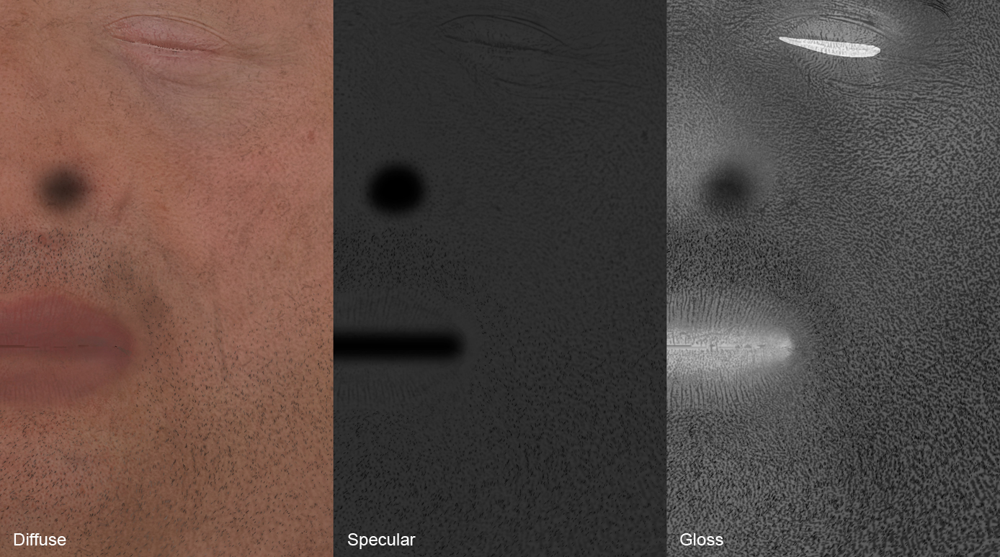
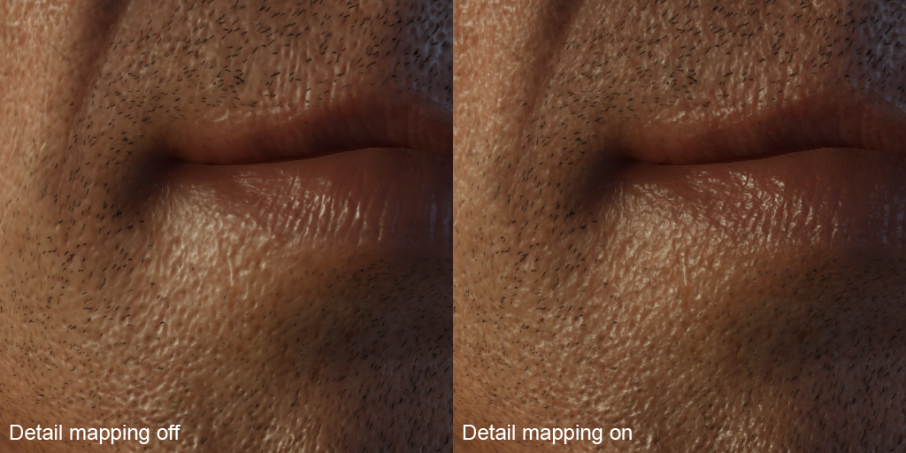
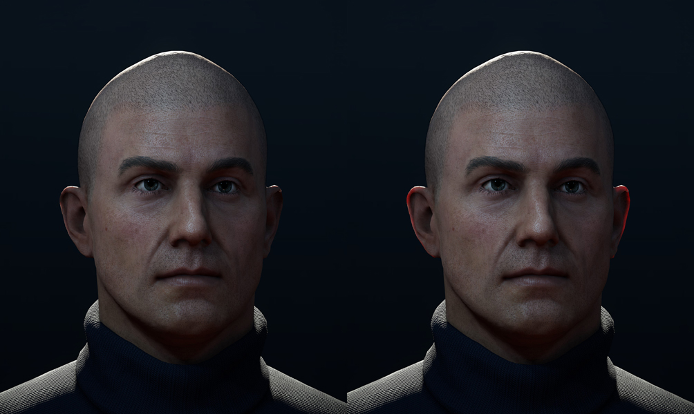
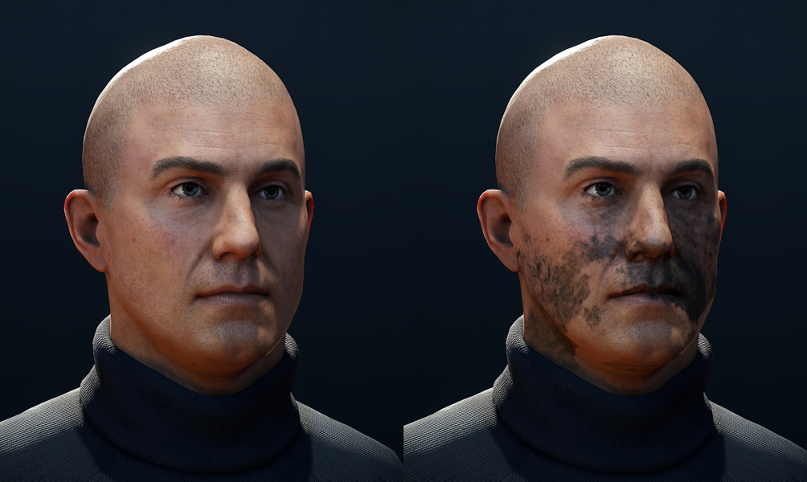

Overview
The HumanSkin shader is a specialized shader for rendering skin surfaces as skin shading cannot be accurately reproduced using regular lighting models.
Shader Params
Shader Params | Description | Shader gen option |
|---|---|---|
Detail bump scale | Controls the strength of the detail normal map Default value: 0.5 | Detail normal map |
Displacement bias | See Displacement/Phong/PN Triangles Tesselation - Shader Generation Params for more information. This parameter requires that Displacement mapping is enabled in the Shader Generation Parameters. | Displacement Mapping |
Displacement height scale | See Displacement/Phong/PN Triangles Tesselation - Shader Generation Params for more information. This parameter requires that Displacement Mapping is enabled in the Shader Generation Parameters. | Displacement Mapping |
Indirect bounce color | Sets the amount of indirectly bounced color. | All |
Melanin | Legacy feature. Controls the amount of pigmentation in the skin Default value: 0.0 | All |
SSS Index | Functionally obsolete. The skin shader is locked to the skin SSS range (1.001 to 1.999) by default. | All |
Tessellation face cull | See Displacement/Phong/PN Triangles Tesselation - Shader Generation Params for more information. This parameter requires that Displacement Mapping is enabled in the Shader Generation Parameters. | Displacement Mapping |
Tessellation factor | See Displacement/Phong/PN Triangles Tesselation - Shader Generation Params for more information. This parameter requires that Displacement Mapping is enabled in the Shader Generation Parameters. Default value: 1 | Displacement Mapping |
Tessellation factor max | See Displacement/Phong/PN Triangles Tesselation - Shader Generation Params for more information. This parameter requires that Displacement Mapping is enabled in the Shader Generation Parameters. Default value: 32 | Displacement Mapping |
Tessellation factor min | See Displacement/Phong/PN Triangles Tesselation - Shader Generation Params for more information. This parameter requires that Displacement Mapping is enabled in the Shader Generation Parameters. Default value: 1 | Displacement Mapping |
Translucency Multiplier | Controls strength of the SSS feature. Defaultvalue: 0.7 | All |
Wrinkles blend | Controls strength of the wrinkle map. Default value: 1 | Wrinkle blending |
Shader Generation Params
| Parameters | Description |
|---|---|
| Wrinkle Blending | Enables the use of sub surface map Alpha for wrinkle blending. |
| Decal Map | Enables the use of a decal map, which is blended on top of the diffuse map. |
| Detail Normal Map | Enables the use of a tiled detailed map for pores and tiny details (_ddn). |
| Subsurface Scattering Mask | Enables the use of diffuse map alpha as an SSS amount multiplier. |
| Displacement Mapping | Enables the use of displacement mapping, which requires a height map (_displ). |
| Phong Tessellation | Enables the use of a rough approximation of smooth surface subdivision. |
| PN Triangles Tessellation | Enables the use of a rough approximation of smooth surface subdivision. |
Using the HumanSkin Shader
The HumanSkin shader is fully integrated with the Physically Based Shading model. Most tweaking takes place directly via the individual texture maps, with individual attributes of the shader being locked to the physically correct values. This enhances usability and ensures consistency between assets. HumanSkin features some unique texture slots to give artists control over the specific features of the shader.
Diffuse
It's generally advisable to author 'flat' diffuse maps. I.e. when basing textures off photographs or scan information, it's key to remove most lighting information. When hand-painting diffuse maps, the focus should be on color and hue changes. An exception to this is high-frequency Ambient Occlusion/Cavity information, which can be added to fake detail occlusion and shading.
Specular Map
In order to achieve a physically correct representation of human skin in the PBR model, a flat base-value of 51 should be used for the specular map. Adding subtle pore detail on top of that (simulating high frequency occlusion) will generally give the most convincing results. Also, to compensate for precision issues with occlusion and shadow casting, it can be helpful to paint in/darken details such as nostrils, cavities of the ear, etc.
Bump Map (Normal Map)
For best results, it is advisable to experiment with the strength of high-frequency details on the high-poly source asset – i.e. keeping such details on a separate layer(s) in the digital sculpting app, can be helpful.
Gloss (Normal Map Alpha)
On the large scale, the gloss map should capture how oily/shiny certain areas of e.g. a face. This adding high contrast details will help to break up specular highlights and improve the look.

Detail
The selected map will be overlayed with the base Normal Map – an easy way to add very high-frequency detail to a model and further break up specular highlights. Tiling can be controlled in the tiling subsection of the texture slot.

Detail Normal Map must be turned on in the Shader Generation Params.
Opacity Map (SubSurfaceScattering)
The SSS map should represent thin areas of skin that can readily be penetrated by light (e.g. ears, nostrils, etc.). SSS maps can be either manually authored or baked with an appropriate tool.

Decal
Will overlay a secondary diffuse map (requires an alpha channel). This is useful to create variation of existing textures, e.g. add tattoos, warpaint or dirt.

Decal Map must be turned on in Shader Generation Params.